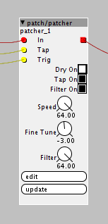

Been wanting to get this together for a while and finally getting around to it - still a work in progress but would love some thoughts/inputs/suggestions!
Based somewhat around the TKOG Mini Glitch but my version has come out a bit more delay-like rather than full on sample glitching. The basic idea is that you set a sample size/delay time with either the dial or with tap tempo and when you trigger the effect, it'll stutter what you've played for the size/time along with randomly choosing between normal play/+1 octave(2x speed)/+2 octave (4x speed).
GlitchStut.axs (12.9 KB)

{kind=link}
Things didn't come out perfect - has some weird behaviors but I like it so far.
- Option to turn dry signal on/off - with dry signal off, there seems to be a slight delay between triggering and playback that I can't seem to figure out but I'm guessing something with how the delay/buffer behaves
- Tap Tempo works fairly well but I'm still having trouble getting it perfectly in time so I added the fine tune to adjust things a bit. -3 seems to get it close enough for me
- Filter is from the delay object I based this around, not really necessary but I like having the option
- Holding the trigger ramps the feedback buffer from 0 to 64 (100%) so that there was nothing until you trigger and then it goes for as long as you hold it. I've found that if you release and very quickly tap again, you can catch more notes into the buffer before the last ones fade away which can get pretty cool sounding
Thats about it...Didn't think about it till now but I left the debounce object inside the patch since they were helping while using my hardware buttons, at least for the tap tempo. Have been thinking about trying a version with a WAV record/playback object and then pitching the random +1/+2 octave afterwards but haven't had the time
again, thoughts/feedback/suggestions/requests I'm all for it!